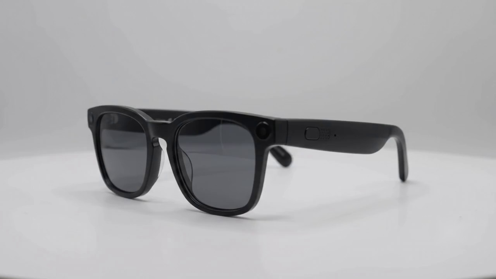

Blynq glasses
BlynqLabs
It sees the room, and knows when not to mention it.
Glasses that give you the social context you cannot see.

- Tells you what is in the room
- Speaks only in the gaps
- Open ear. No display.
How it works
Most of what it tells you is not a sentence.
A conversation gives you no room for a paragraph. So it earns every word it spends.
- A frame across the link
- 868ms
- Press to spoken answer
- 8.9s
- A spoken command, decided on the glasses' phone
- 1ms
Design
Three things on the temple.
There is no display. Every response is spoken, which means nothing on your face can take you out of the room you are in.
- 01 · Button
- Press to ask.
A single recessed button on the outer temple. It is the only way to ask for a full answer, which is why nothing is ever spoken at you unprompted.
- 02 · Speaker
- Open ear.
A grille set into the underside of the arm, aimed at your ear rather than into it. Your ear canal stays open, so the real conversation still gets through.
- 03 · Microphone
- Hears the room.
A pinhole at the hinge. It hears the room in order to know when someone is speaking, and stores no audio.
Privacy
The room is heard, not kept.
The microphone is there for timing, not identity. It listens for when someone is speaking so the glasses know to stay out of it. No audio is kept and no faces are learned.
Who it is for
One channel. A lot of rooms.
Early access
We are building the first cohort now.
We would rather build this with the people who will use it than for them. If that is you, tell us about your room.